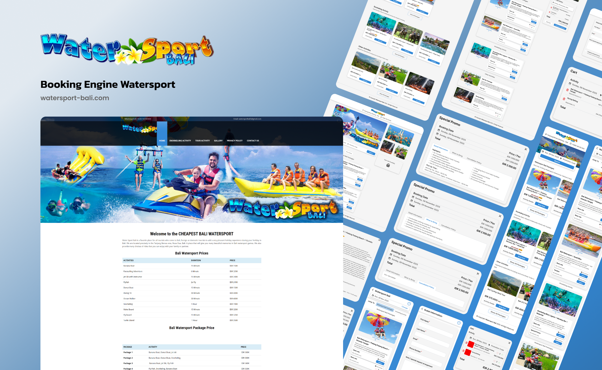

Kawasan pariwisata bahari di Bali membutuhkan sistem operasional yang serba cepat dan akurat. Water Sport Bali hadir dengan mengimplementasikan mesin pemesanan daring yang meredefinisi cara wisatawan mengatur jadwal liburan mereka secara mandiri, transparan, dan efisien sebelum tiba di lokasi tujuan.

Pratinjau antarmuka sistem pemesanan mandiri pada platform Water Sport Bali.
Pengelolaan aktivitas pariwisata yang mengandalkan pemesanan manual melalui panggilan telepon atau aplikasi pesan instan sering kali menimbulkan berbagai masalah operasional. Pada musim liburan puncak, operator wahana air kewalahan menghadapi lonjakan permintaan yang berujung pada antrean panjang, penumpukan jadwal, serta risiko pemesanan ganda yang merugikan wisatawan.
Di sisi lain, wisatawan domestik maupun mancanegara mendambakan transparansi harga dan kemudahan akses informasi. Praktik penawaran harga yang tidak konsisten di lapangan sering kali menurunkan tingkat kepercayaan wisatawan terhadap penyedia layanan pariwisata bahari tersebut.
Platform watersport-bali.com dibangun untuk menyelesaikan masalah efisiensi tersebut. Melalui penerapan mesin pemesanan yang terintegrasi secara langsung, wisatawan diberikan kendali penuh untuk menelusuri berbagai paket aktivitas, memilih tanggal pelaksanaan, meninjau rincian biaya yang transparan, dan menyelesaikan pemesanan dalam satu alur kerja yang terpusat.
Sistem yang menyajikan banyak variabel harga dan rincian paket memerlukan tata letak visual yang terstruktur agar pengunjung tidak mengalami beban kognitif saat mengambil keputusan pembelian.
Psikologi Warna Samudra: Desain antarmuka memprioritaskan penggunaan spektrum warna biru dan putih bersih. Pilihan warna ini dirancang untuk merepresentasikan elemen air laut dan langit
tropis sehingga pengunjung langsung merasakan nuansa liburan sejak pandangan pertama.
Keterbacaan Data Kuantitatif: Pada halaman utama, saya menerapkan struktur tabel yang minimalis untuk menyajikan daftar aktivitas beserta durasi dan harganya. Penempatan tabel ini bertujuan
untuk memberikan informasi yang padat secara langsung tanpa mengharuskan pengguna menavigasi terlalu banyak halaman.
Modul Pemesanan Interaktif: Jendela dialog pemesanan dirancang secara detail namun tetap ringkas. Modul ini menyajikan pilihan tanggal kalender, rincian kelengkapan yang harus dibawa,
kebijakan pembatalan, serta perhitungan total harga otomatis berdasarkan jumlah peserta yang dimasukkan.
Kekuatan utama dari platform ini bertumpu pada logika sisi peladen yang menangani proses keranjang belanja dan penjadwalan. Sebagai pengembang web, saya harus merangkai algoritma yang mampu memproses ketersediaan kuota aktivitas secara presisi.
Implementasi fitur keranjang belanja dikembangkan untuk dapat menampung berbagai aktivitas pariwisata yang berbeda dalam satu kali sesi pemesanan. Sistem akan mengakumulasi total tagihan berdasarkan jumlah partisipan dan menerapkan logika pemotongan harga otomatis apabila pengguna memasukkan kode promosi yang sah.
Tahap akhir dari alur transaksi ini disempurnakan melalui perancangan formulir informasi tamu. Data masukan pengguna dirancang agar tervalidasi secara ketat di sisi peramban web dan peladen untuk mencegah terjadinya kekosongan data. Informasi ini kemudian diteruskan secara aman ke dalam basis data operator wahana air guna mempermudah proses pendataan sebelum wisatawan tiba di lokasi.
Transparansi harga mempercepat proses pengambilan keputusan oleh calon wisatawan.
Automasi penjadwalan secara signifikan mengurangi risiko pemesanan ganda di lapangan.
Data reservasi terpusat membantu staf memberikan pelayanan optimal sejak wisatawan tiba.
Secara keseluruhan, perancangan platform Water Sport Bali mengukuhkan pemahaman bahwa modernisasi operasional adalah kunci keberhasilan bisnis pariwisata. Dengan memadukan desain antarmuka yang ramah pengguna dan arsitektur mesin pemesanan yang canggih, operator wahana air tidak hanya mempermudah transaksi, tetapi juga berhasil meningkatkan standar mutu pelayanan pariwisata secara menyeluruh.